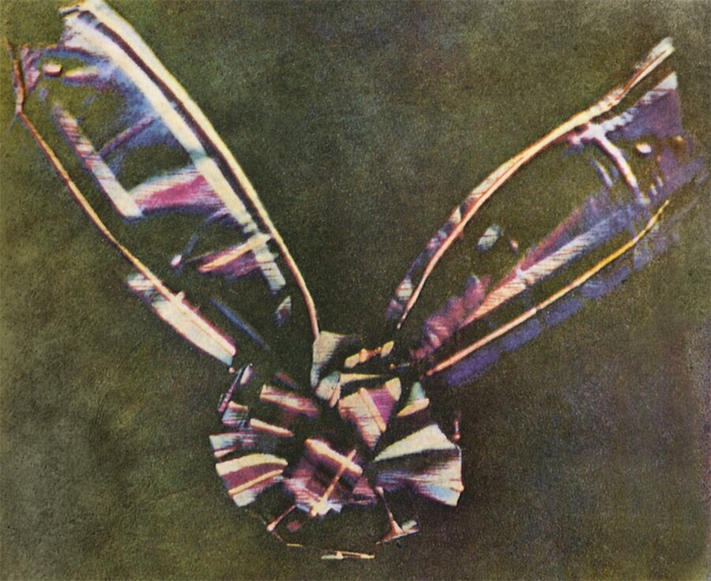
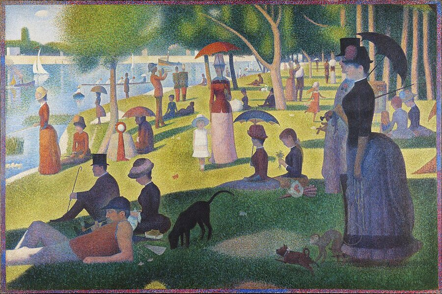

知覚・錯覚
赤・青・黄ではない。光の三原色は赤・緑・青。色の三原色はシアン・マゼンタ・イエロー。同じ「原色」なのにまるで違う理由は、足し算と引き算の違いにある。
トマス・ヤングが三色説を提唱。人間の色覚が3種の受容体で成り立つことを示唆した。
同年、ナポレオンが終身統領に就任。ユーゴー誕生。米国ではウェストポイント陸軍士官学校が開校した。
加法混色と減法混色の区別を初めて明確にしたのは、マクスウェルとヘルムホルツ。1850年代のこと。ニュートンですら、光の混色と絵具の混色を混同していた。
幼い頃、絵具の赤と青を混ぜて紫を作ったことがあるだろう。赤と緑を混ぜたら、濁った茶色になった。黄と青で緑。どんどん混ぜていくと、最後にはほぼ黒になった。絵具とはそういうものだと、私たちは小さい頃に体で覚えた。
ところがスマートフォンの画面は、赤と緑と青のたった3色の光ですべての色を作っている。赤い光と緑の光を重ねると——黄色になる。全部重ねると白になる。茶色にも黒にもならない。絵具とは正反対のことが起きている。
その理由はシンプルで、しかも美しい。光は「足し算」で色を作り、絵具は「引き算」で色を作っている。
光と絵具で「色を混ぜる」仕組みがなぜ正反対になるのかを、自分の手でシミュレーションしながら理解する。色の見え方が少し変わるかもしれない。
この記事は「光と絵具で色が正反対に混ざる」という話だ。ただ、その前にひとつだけ知っておいてほしいことがある。私たちが見ている「色」は、光そのものではなく、脳が作り出した体験だ。リンゴが赤いのではない。リンゴの表面が特定の波長の光を反射し、それを脳が「赤」として解釈している。このことを頭の片隅に置いておくと、この先の説明がすっきりつながる。
そしてもう一つ。人間の目の奥（網膜）には、色を感じるための細胞が3種類ある。錐体細胞錐体細胞（cone cell）
網膜にある色覚を担う視細胞。L（長波長＝赤系）、M（中波長＝緑系）、S（短波長＝青系）の3種類がある。明るい場所で働く。と呼ばれるもので、それぞれ赤っぽい光、緑っぽい光、青っぽい光に強く反応する。脳はこの3つの信号の比率を手がかりに、あらゆる色を組み立てている。テレビもスマホも、この「3種類あれば全色を作れる」という仕組みを利用している。
ではここからが本題だ。「色を混ぜる」とは何をしているのか。実は、まったく別の2つの操作がある。ひとつは光を足す操作。もうひとつは光を引く操作。この違いが、「光の三原色」と「色の三原色」を分けている根本的な理由だ。次の図で、この2つの世界を並べてみよう。
左が光の世界。暗闇に赤（R）・緑（G）・青（B）の光を重ねると、重なった中央は白になる。光が増えるから明るくなる——これを加法混色と呼ぶ。右が絵具の世界。白い紙にシアン（C）・マゼンタ（M）・イエロー（Y）の絵具を重ねると、中央は黒になる。光が吸収されるから暗くなる——これを減法混色と呼ぶ。
| 項目 | 加法混色（光） | 減法混色（絵具・インク） |
|---|---|---|
| 何をしているか | 光を重ねて足す | 白色光から波長を吸収して引く |
| 三原色 | 赤（R）・緑（G）・青（B） | シアン（C）・マゼンタ（M）・イエロー（Y） |
| 全部混ぜると | 白 | 黒（理論上） |
| 混ぜるほど | 明るくなる | 暗くなる |
| 使われる場面 | テレビ、スマホ、舞台照明 | 印刷、絵画、プリンター |
✗ よくある誤解
色の三原色は赤・青・黄色だ
✓ 実際は
正しくはシアン・マゼンタ・イエロー（CMY）。赤・青・黄は昔の美術教育の名残で、混色の正確さでは劣る
✗ よくある誤解
光と絵具で三原色が違うのは、光と物質の性質が根本的に違うからだ
✓ 実際は
どちらも「光」の問題。違いは足すか引くかという操作だけ。CMYはRGBの補色にすぎない
✗ よくある誤解
赤と緑の光を混ぜたら暗い色になるはずだ
✓ 実際は
黄色になる。光の混色は直感に反する。混ぜるほど明るくなるのが加法混色
暗い部屋を想像してほしい。そこに赤いスポットライトを1つ点ける。床に赤い円ができる。そこに緑のスポットライトを重ねて当てると、重なった部分が黄色に見える。さらに青を加えると——白になる。光が「増える」から明るくなる。これが加法混色だ。テレビ、スマホ、PCの画面はすべてこの原理で動いている。画面に虫眼鏡を当てると、赤・緑・青（RGB）の小さなサブピクセルが見える。
R（赤）・G（緑）・B（青）のスライダーで光の強さを変えてみよう。左のキャンバスで3色の光が重なり、中央の白い部分がどう変わるかを観察しよう。右には重なった結果の色を表示している。
試してみよう: R＋G（赤＋緑）だけを最大にし、Bを0にすると→ 黄色。G＋B → シアン。R＋B → マゼンタ。3色すべて最大→ 白。
白い紙は太陽光のすべての波長を反射している。だから白く見える。そこにシアンの絵具を塗ると何が起きるか。シアンは赤い波長を吸収する。つまり白色光から赤を「引く」。残ったのが緑と青の光で、それがシアンに見える。同じように、マゼンタは緑を引き、イエローは青を引く。3色すべてを塗ると、赤も緑も青もすべて吸収されて——理論上は黒になる。光が「減る」から暗くなる。これが減法混色だ。
プリンターがCMYK（シアン・マゼンタ・イエロー＋ブラック）を使うのはこの原理による。CMYだけでは完全な黒にならない（くすんだ茶色になる）ため、純粋な黒インク（K = Key plate）を追加している。
C（シアン）・M（マゼンタ）・Y（イエロー）のスライダーで絵具の量を変えてみよう。白い紙の上にインクを重ねるイメージ。中央の重なった部分がどう変わるかを見てほしい。
試してみよう: C＋M（シアン＋マゼンタ）→ 青。M＋Y → 赤。C＋Y → 緑。3色すべて最大→ 黒（に近い色）。加法混色とは逆のことが起きている。
ここまでの説明とシミュレーターで、頭では理解できたかもしれない。しかし「赤と緑で黄色」は、絵具の経験が染みついた体には受け入れがたい。以下のクイズで、直感がどれだけ「絵具の世界」に引っ張られているかを確かめてみよう。
光の世界では足し算、絵具の世界では引き算。同じ「混ぜる」という動詞が、正反対の物理操作を指している。
——この記事の核心
加法混色の三原色はRGB（赤・緑・青）。減法混色の三原色はCMY（シアン・マゼンタ・イエロー）。この2組は偶然の組み合わせではない。色相環の上で見ると、CMYはRGBのちょうど反対側、つまり補色補色（complementary color）
色相環上で正反対に位置する色のペア。加法混色で混ぜると白になる。赤⇄シアン、緑⇄マゼンタ、青⇄イエロー。に当たる。
色相環の上で、RGBとCMYは等間隔に交互に並んでいる。向かい合う色同士が補色。つまりCMYは「RGBの否定形」。
R（赤）の反対が C（シアン） G（緑）の反対が M（マゼンタ） B（青）の反対が Y（イエロー）
シアンは「白色光から赤を引いた残り（G+B）」。マゼンタは「白色光から緑を引いた残り（R+B）」。イエローは「白色光から青を引いた残り（R+G）」。減法混色の原色とは、加法混色の原色を1つずつ消すための「逆の道具」に他ならない。
補色の関係を分解する
白色光 = R + G + B。ここから赤（R）を取り除くと G + B が残る。これがシアン。シアンの絵具を紙に塗ると、反射光から赤い波長が消える。だからシアンは赤の補色。
白色光から緑（G）を取り除くと R + B が残る。これがマゼンタ。マゼンタの絵具は緑の波長を吸収する。だからマゼンタは緑の補色。
白色光から青（B）を取り除くと R + G が残る。これがイエロー。イエローの絵具は青い波長を吸収する。だからイエローは青の補色。
C（赤を吸収）+ M（緑を吸収）+ Y（青を吸収）= R も G も B もすべて吸収 → 何も反射しない → 黒。足し算の果てに白があり、引き算の果てに黒がある。
結論: CMYは「RGBの否定形」。2つの系は裏表の関係にあり、色相環上で互いに正反対に位置している。
加法混色と減法混色の区別は、今の私たちには「当たり前」に思える。しかし歴史を振り返ると、この区別が明確になったのは驚くほど最近だ。ニュートンアイザック・ニュートン（1642–1727）
プリズムで白色光をスペクトルに分解した実験で知られる。光の混色と絵具の混色の違いは十分に整理しなかった。すら、光の混合と絵具の混合を明確に区別していなかった。その混同を最終的に解消したのは、1850年代のマクスウェルジェームズ・クラーク・マクスウェル（1831–1879）
電磁気学の統一で知られるスコットランドの物理学者。色彩科学にも多大な貢献をし、1861年に世界初のカラー写真を撮影。とヘルムホルツヘルマン・フォン・ヘルムホルツ（1821–1894）
ドイツの物理学者・生理学者。ヤングの三色説を実験で精緻化し、ヤング＝ヘルムホルツ説として確立。だった。
1666
ニュートンのプリズム実験
白色光がスペクトルに分解されることを示した。しかし光の混色と絵具の混色の区別は不明確だった。
1721
ル・ブロンの三色印刷
ヤーコブ・ル・ブロンが赤・黄・青による三色印刷法を開発。減法混色の実用化の嚆矢。
1802
トマス・ヤングの三色説
人間の色覚は3種の受容体で説明できると提唱。後にヤング＝ヘルムホルツ説として確立される。
1855–1860
マクスウェルとヘルムホルツ
両者が独立に、加法混色と減法混色の違いを初めて明確化。ニュートン以来の混同に終止符を打った。
1861
マクスウェルの世界初カラー写真
タータンリボンを赤・緑・青のフィルターで3回撮影し重ね合わせ。加法混色の三原色による色再現を実証した。
1880s
スーラと新印象派
絵具を混ぜる代わりに色の点を並べ、観る者の網膜上で加法混色を起こす「筆触分割」を実践した。
"The distinction between the mixture of light and the mixture of pigments was first clearly stated by Maxwell and Helmholtz."
光の混合と絵具の混合の区別を初めて明確にしたのは、マクスウェルとヘルムホルツである。
— Riccardo Manzotti, IEEE Annals of the History of Computing, 2019

世界初のカラー写真（1861年）。マクスウェルの指示でトーマス・サットンが赤・緑・青のフィルターで3枚を撮影し、重ね合わせた
私たちの多くは、幼い頃に「色の三原色は赤・青・黄」と教わった。このRYBモデルRYB（Red-Yellow-Blue）
18世紀以来の伝統的な美術教育の三原色。物理的にはCMYのほうが広い色域を再現できるが、絵具の実用では今も使われる。は18世紀の美術理論に由来する。赤と青を混ぜても鮮やかな紫にはならない。マゼンタと青を混ぜれば鮮やかな紫になる。CMYが「正しい」三原色だ。
ではなぜRYBが200年以上も生き延びたのか。理由は単純で、鮮やかなマゼンタの絵具が手に入らなかったからだ。キナクリドンマゼンタキナクリドンマゼンタ（Quinacridone Magenta）
1950年代に商業化された合成有機顔料。鮮やかなマゼンタ〜ローズ色で、耐光性に優れる。これにより美術用絵具でも「正しいCMY」に近い混色が可能になった。が商業的に使えるようになったのは1950年代のことだ。科学が正しくても、道具が追いつかなければ実践は変わらない。
減法混色にはもうひとつ、本質的な弱点がある。光を吸収して色を作る以上、どれだけ鮮やかな絵具を使っても、目の前の太陽光そのものの明るさを超えることはできない。混ぜれば混ぜるほど暗くなる。屋外の風景——陽光に輝く水面、木漏れ日、夕焼けの空——を絵具で再現しようとすると、どうしても光の鮮烈さが失われる。19世紀の画家たちはまさにこの壁にぶつかっていた。
そこで登場したのが筆触分割筆触分割（Divided Brushwork / Divisionism）
パレット上で絵具を混ぜず、キャンバスに小さな色の点や筆触を隣り合わせに置く技法。観る者の網膜上で色が加法的に混合され、パレット混色よりも鮮やかに見える効果を狙った。という発想だ。絵具をパレットで混ぜると暗くなる（減法混色）。なら、混ぜなければいい。キャンバスの上に赤い点と黄色い点を細かく並べれば、離れて見たときに網膜の上で光が混ざり、パレットで混ぜるよりも鮮やかなオレンジが知覚される。これは目の中で起きる「加法混色」に近い原理だ。スーラジョルジュ・スーラ（1859–1891）
フランスの画家。色彩科学を研究し、点描法（ポインティリズム）を体系化。代表作『グランド・ジャット島の日曜日の午後』。はこの原理を「点描法」として体系化し、モネやピサロの印象派の筆触にも同じ発想が流れている。
スーラと新印象派の点描法（1880s–1891）
スーラは色彩科学を徹底的に研究し、絵具を混ぜない方法で光の鮮やかさに挑んだ。減法混色の限界を、加法混色の原理で乗り越えようとした科学者兼画家だった。ただし純粋な加法混色にはならず、鮮やかさの向上にも限度があることは後の研究で示されている。
デジタル時代のRGB vs CMYK問題
PCの画面で鮮やかに見えた色が、印刷すると暗くくすむ。デザイナーが必ず経験するこの問題は、加法混色（スクリーン）と減法混色（紙）の変換ギャップそのものだ。RGBの色域はCMYKの色域よりも広い。

ジョルジュ・スーラ『グランド・ジャット島の日曜日の午後』（1884–86年）。小さな色の点を並べ、観者の網膜上で混色させる点描法は、加法混色の原理を絵画に応用したものだった
On the Theory of Light and Colours
三色説の原点。色覚が3種の受容体で説明できるという提唱を含む。
The Color Top and the Distinction Between Additive and Subtractive Color Mixing
マクスウェルとヘルムホルツが加法/減法混色の区別を確立した経緯。
The Perception of Color — Webvision
色覚の生理学的基盤を網羅的に解説。オープンアクセス。
Additive versus Subtractive Color Mixing
スペクトルレベルの加算と乗算の違いが視覚的にわかるアプレット。